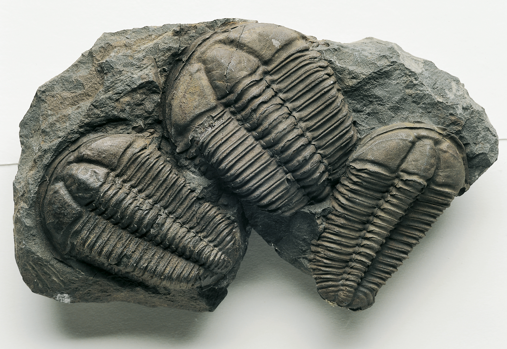
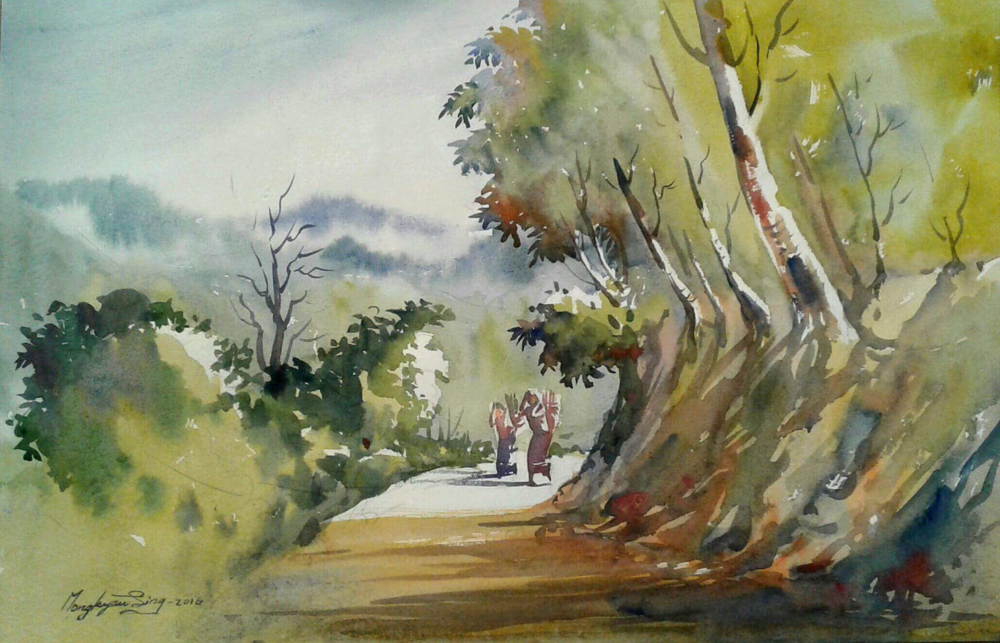
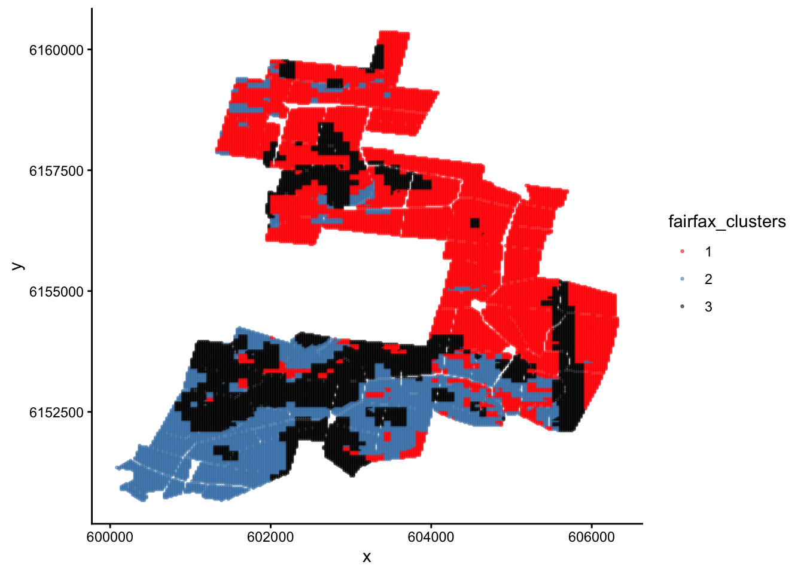

Use k-means clustering to determine sampling strata in R.
Visualise clusters in R and in Google earth.
Specific goals
By the end of this lab, you should be able to:
A new tool
Welcome to week 11. Last week, we learned about Principle Component Analysis (PCA), which works like a multidimensional camera. This week, we will learn about Cluster Analysis, which you can think of as a multidimensional paintbrush.
By the end of this lab, you will know how split a multidimensional dataset into neat subcategories using computer algorithms. The different ways of making these categories are called clustering techniques.
We will learn about a common clustering technique called k-means clustering.
Preparation
To prepare for this lab, please activate the following packages:
library(readr)library(tidyverse)
── Attaching core tidyverse packages ──────────────────────── tidyverse 2.0.0 ──
✔ dplyr 1.2.0 ✔ purrr 1.2.1
✔ forcats 1.0.1 ✔ stringr 1.6.0
✔ ggplot2 4.0.2 ✔ tibble 3.3.1
✔ lubridate 1.9.4 ✔ tidyr 1.3.2
── Conflicts ────────────────────────────────────────── tidyverse_conflicts() ──
✖ dplyr::filter() masks stats::filter()
✖ dplyr::lag() masks stats::lag()
ℹ Use the conflicted package (<http://conflicted.r-lib.org/>) to force all conflicts to become errors
library(vegan)
Loading required package: permute
The ‘vegan’ package is especially useful for advanced multivariate statistics. Check out this link for more information.
Just like last week, we strongly recommend that you go through this lab with pen and paper in hand.
We’ll talking about painting, after all.
Paintbrushes belonging to Charlyn Marina Khater, Lebanese designer and painter. We can use colour to represent different subcategories within our data. From Wikimedia Commons (2014), by Fox212121.
Part 1: No Pictures Just Yet
Before we reach for our paintbrushes, we have to understand the fundamental idea behind splitting datasets into subcategories. Why might we want to do this?
The simple reason is that being humans, we enjoy subcategories. They are useful. Think about the way books are organised in a library, or pet food is organised in a pet store. Similar items belong together – that way, they are easier to find.
NoteWhen do we need subcategories in scientific research?
Think about the way we collect our data in a stratified sampling design, where we first divide our study site into different strata and then sample randomly within each one (see lab 2 for more information).
How do we decide what these strata should be in the first place? We may need to split our study site into a collection of sensible sub-sites.
Sometimes, the way we create subcategories is very obvious. For example, it is common practice for restaurants to offer their foods and drinks on separate menus. There is very little ambiguity over how to do this – if it comes in a glass and you can slurp it, it is a drink (soups and consumes might add some difficulty, but usually not much), and it belongs on the drink menu.
Sometimes, however, things are not so easy. For example, how do you organise books on your bookshelf? Do you group books by subject – science, history, art, home and gardening? Do you group them by length? By how likely you are to read them in the next few days? A combination of the above?
Old books collected by the Basking Ridge Historical Society. Some of these books have no titles on their cover pages. From Wikimedia Commons (2008), by William Hoiles from Basking Ridge, NJ, USA.
The difference between sorting food/drink items on a menu and sorting books on your bookshelf is that in the case of food/drink, there is only one distinguishing characteristic – to slurp or not to slurp; but in the case of books, there are multiple characteristics to consider, none of which take obvious precedent over the others.
In this case, the food/drink divide is a univariate problem, while book organisation is a multivariate problem.
Exercise: Distances
A page with marginalia from the first printed edition of Euclid’s ‘Elements’, printed by Erhard Ratdolt in 1482. The ‘Elements’ is one of the oldest surviving mathematical treatises. It was written in 300BC, and exclusively tackles the subject of angles, distances, and geometric arrangements on a flat surface, a field of maths known today as ‘Euclidean Geometry’. From Folger Shakespeare Library Digital Image Collection, original link: http://luna.folger.edu/luna/servlet/s/2c163w.
Here’s an exercise. Think about your favourite foods. Picture them in your mind. Hungry? Perfect.
If you are attending this lab in person, you will see a pair of signs on the classroom walls. One of these signs will read “Sweet/Savory”, and the other “Pungent/Mild”. Align yourself on these axes according to your food preferences. If you have no preference on either front, stay in the middle of the room.
Once you have made your choice, look around you. The people nearby are the ones who like similar foods to you. The people on the other side of the room are those who like different foods to you.
Tip
If you are completing this lab remotely, try the same exercise with your friends.
Food basket. Vegetables come in a range of flavours and textures. Different people prefer different ones. From Wikimedia Commons (2012), by liz west from Boxborough, MA.
Notice what we did here – we represented food preferences using physical distance. Food preference is an abstract concept, but physical distance is something we can measure concretely. By rearranging ourselves in a physical space, we saved the trouble of having to ask every other person in the room: “Do you like savory foods?” or “Do you prefer mild flavours?” to find out who likes the same types of foods we do – all we need to do is look at who is nearby.
This way of using distance to represent similarity is the key to a subtopic of multivariate statistics called distance-based ordination. These techniques work differently to the PCA methods we learned about last week, though they share the common goal of reducing dimensions in our data.
WarningWhen should I use distance-based ordination instead of PCA?
As a rule of thumb, distance-based ordination is better for datasets where you expect non-linear relationships between response variables. Many types of ecological data fall under this category – for example, species abundance data.
In our food example just now, we used the intuitive definition of ‘distance’ – the straight-line distance between two points on a flat surface. This type of distance is called Euclidean distance. We can certainly use Euclidean distance in multivariate analysis, but it is not the only type of distance metric we can use. In fact, sometimes we can even get away with using what are known as semi-metrics or dissimilarity measures instead of true metrics.
Tip
If you are interested in the mathematics behind metrics and semi-metrics, check out this page by the University of Washington.
NoteBuilding Habits
Imagine if we added a third characteristic of food: Crunchy/Soft. How would you modify the previous exercise to accomodate this extra variable?
What happens if we add even more variables?
In the next example, we will use a semi-metric known as the Bray-Curtis Dissimilarity. The Bray-Curtis Dissimilarity is very popular in ecological studies. It is especially useful when analysing species abundance data.
Photo of a Platystrophia biforata fossil from Schlotheim (1820). Platystrophia belongs to a group of animals called brachiopods, which were common in the late Ordovician Period (~ 450 mya). When fossilised, brachiopods look like clams. When living, many brachipods have a long, fleshy pedicle/stalk that anchors them to the seabed. Specimen stored in the Estonian Museum of Natural History. From Wikimedia Commons (2015), uploaded by Tõnis Saadre.
Practice: Fossils
The Cincinnati region of Ohio, USA, is a hot spot for fossils of ancient marine organisms. These fossils date from the Late Ordovician Period, around 450 million years ago.
NoteSharpen your skills
Read the dataset ‘fossils.csv’ into R, and name it fossils.
When you read in this dataset using the read.csv() function, include the extra argument: row.names = 1.
Tip
We use the row.names = 1 argument for two reasons: 1. our dataset has an ‘ID’ column that does not fit in with the rest of our data, and 2. the columns of our dataset have names, but its rows do not.
The row.names = 1 argument solves both problems at once – it removes the first column in our dataset (which is the misfit ‘ID’ column), and use its entries as the names for our rows.
TipSolution
Read in the data, including the row.names = 1 argument:
Each row in our data is an individual rock sample with its own ‘ID’. In each sample, we may find a different collection of fossilised animals. This is the standard way to organise abundance data – samples as rows, and genera/species as columns.
NoteSharpen your skills
Look at sample 2D002, the second row in our dataset. What is the most abundant animal genus in this sample?
TipSolution
It seems like ‘Rafin’ (which stands for Rafinesquina, a type of brachiopod) is the most common genus in sample 2D002, with a count of 7 individuals.
Also notice there are many genera with 0 abundance in this sample. Zero data is a common theme in ecological surveys, which is another reason why we prefer to use distance-based ordination techniques instead of PCA for these types of datasets.
Now, suppose we asked the question: which rock samples are similar to each other, and which are different? Take a moment to think about how you would answer this question. Would you compare the samples one at a time, or is there a better way?

Trilobite fossils (the ones in this picture are not from Cincinnati). Trilobites are a famous group of extinct arthropods from the palaeozoic era (539~251 mya). From Wikimedia Commons (2006), by Muzejní komplex Národního muzea.
There is a better way. We can use the Bray-Curtis dissimilarity measure. We do this using the vegdist() function. This function is part of the ‘vegan’ package, and is very useful for calculating all kinds of distance metrics and dissimilarity measures.
Here is how we do it:
fossils_BC_dissimilarity <-vegdist(fossils, method ='bray') # Specify `method = '...'` to tell R which distance metric or semi-metric you want to use. # In this case, we used `method = 'bray'` for Bray-Curtis dissimilarity, a semi-metric.
You will see a new item pop up in your R environment under the ‘Values’ tab called ‘fossils_BC_dissimilarity’. This is the dissimilarity matrix generated by vegdist(). To turn this matrix into a table we can inspect, use the as.matrix() function.
NoteSharpen your skills
Use the as.matrix() function to turn fossils_BC_dissimilarity into a table, and rename it fossil_BC_dissimilarity_table.
You should see a new item appear in your R environment, this time under the ‘Data’ tab, called ‘fossil_BC_dissimilarity_table’. Click on this item to open it in a new window.
NoteSharpen your skills
What do you think this table means?
Why are there cells with values of 0?
TipSolution
This table tells us the dissimilarity between our samples. The higher the number, the less similar the two samples are. You can picture these numbers as the distances between samples, just like the distances between you and your classmates in the food exercise from earlier.
Cells with values of 0 mean the samples are identical. It is no accident that these cells appear along the top-left/bottom-right diagonal – each sample is identical to itself.
Based on this table, we can answer a few simple questions. For example:
NoteSharpen your skills
Which rock sample is the least similar to sample 2D001? Which one is the most similar (besides itself)?
Tip
A useful shortcut to pick out the largest number in any row is the which.max() function.
TipSolution
The least similar sample to 2D001 is the one with the greatest Bray-Curtis dissimilarity index in the first row.
Let’s use which.max() to see where this number is:
which.max(fossil_BC_dissimilarity_table[1,])
2S025
103
It seems that sample 2S025, in column 103, is the least similar to sample 2D001. They share a Bray-Curtis dissimilarity of ~0.93.
Similarly, which.min() tells us where to find the smallest number in the first row.
which.min(fossil_BC_dissimilarity_table[1,])
2D001
1
Which returns no other than sample 2D001, because it has a Bray-Curtis dissimilarity of 0 with itself. To get around this problem, let’s exclude the first column:
which.min(fossil_BC_dissimilarity_table[1,-1])
2D002
1
# [1,-1] filters for the first row, excluding the first column (due to the minus sign).
Which tells us that sample 2D002 is in fact the most similar to sample 2D001, with a Bray-Curtis dissimilarity of 0.~43.
Give it a try yourself:
NoteBuilding Habits
Which rock sample is the least similar to sample 2D003? Which one is the most similar (besides itself)?
WarningSimilarity or dissimilarity?
So far, we have talked extensively about Bray-Curtis dissimilarity. However, we could just as easily talk about Bray-Curtis similarity.
To convert from one to the other, use the following trick:
BC_{similarity} = 1-BC_{dissimilarity}
Earlier, we mentioned that the Bray-Curtis dissimilarity is only one of many metrics/semi-metrics that exist. You may be itching to try some different metrics, just to see what they are like:
NoteSharpen your skills
Generate a dissimilarity matrix with vegdist(fossils, method = ...) using a distance metric or semi-metric other than the Bray-Curtis dissimilarity. Some fun ones to try are: method = 'manhattan', method = 'euclidean', method = 'jaccard'.
Rename this matrix fossils_’‘_dissimilarity_table, where’’ is the method you used (e.g. fossils_euclidean_dissimilarity_table)
Tip
Type ?vegdist into your console to see what other distance metrics exist.
Remember you can make your matrix into a nice table with the as.matrix() function.
Unlike when we used Bray-Curtis dissimilarity, the numbers are no longer between 0 and 1. This is because Euclidean distance is an unbounded metric.
That’s a lot of numbers. Time for pictures, what do you say?

A watercolour painting titled: ‘Nature and peoples life in cht’, by artist Mong kyaw sing marma. Cluster Analysis uses the distance matrices we learned about just now to colour-code multivariate datasets. From Wikimedia Commons (2019).
Part 2: Paintbrushes Out
Now that we have learned what happens behind the scenes of a Cluster Analysis, it is time for the real deal. Dissimilarity measures are well and good, but they are only the means to an end.
The ultimate goal of Cluster Analysis is… well, clusters. Let’s get some of those going.
Exercise: k-means, a non-hierarchical clustering method.
For this exercise, we will bring back the iris dataset from last week.
NoteBuilding Habits
Check the structure of the iris dataset using the str() function. Remember that this dataset is already built into R.
Last week, we saw that the iris dataset has 4 numeric variables. For the sake of visualisation, let’s pick 2 of them to be our x and y axes respectively.
NoteSharpen your skills
Use ggplot() to make a scatter plot of the iris dataset. You can choose any two of the four numeric variables: Sepal.Length, Sepal.Width, Petal.Length, or Petal.Width to be your x and y axes.
# shape = 1, stroke = 1 arguments give the graph its rimmed circles. # Stick with normal circles if you like them better; it's up to you.
We can already see that some points seem to group together, and we can try to guess where these groups start and end – but that is not easy to do by eye. Also, remember we are only seeing a 2-dimensional picture of a 4-dimensional situation. If you chose a different set of axes from me, you might have seen a different picture with different groups.
We need the help of the multivariate paintbrush – k-means clustering.
K-means is a non-hierarchical clustering technique. You can think of it as colouring a random set of starting points and letting those colours spread from one point to the next until every point is coloured – similar to the way patches of watercolour paint spread out over a piece of paper. In reality, the process is a little more complicated than this – your demonstrators and lectures will happily elaborate.
TipHierarchical vs non-hierarchical
When should you use hierarchical clustering as opposed to non-hierarchical clustering?
Hierarchical clustering is more ‘powerful’ in the sense that you can see how every site/sample relates to every other site/sample at once – from the closest relations to the furthest ones, each one nested in the next like the branches of a phylogenetic tree.
K-means, being a non-hierarchical technique, offers an entirely different advantage – it allows you to specify exactly how many clusters you want to create. This is useful if you have logistic constraints and/or prior knowledge about your data.
To perform k-means clustering, we can use the kmeans() function. Let’s apply it to the iris dataset – remember to first exclude the ‘Species’ column. We will specify 3 clusters for now.
iris_k_means_3_clusters <-kmeans(iris[,-5], centers =3, nstart =20)# [,-5] excludes the fifth column, which is our 'Species' column.# kmeans(..., centers = 3) tells R we want 3 clusters.# kmeans(..., nstart = 20) tells R we want to try 20 different initial configurations
Done! Let’s see the results.
The k-means analysis has assigned each of our samples to one of three clusters. This information is stored in the ‘cluster’ column.
NoteSharpen your skills
Pick out the ‘cluster’ column from iris_k_means_3_clusters. Remember you can pick columns by name using the $ operator.
We see that the first batch of samples were sorted into cluster 3, the next batch into 2, etc. There are some alternating assignments in between, which is interesting.
Now we can bring back our original scatter plot and colour-code it based on this ‘cluster’ column:
NoteSharpen your skills
Re-make your scatter plot from earlier, but this time colour-coded by cluster.
TipSolution
You can introduce colours to your plot in one of two ways: directly in the geom_point() section, or in the aes() section, which is the way I prefer.
First, make iris_k_means_3_clusters$cluster into a factor:
Notice something strange? K-means is supposed to group the closest points together so that each cluster is completely separated from the others, but why are some of the clusters mixed up?
NoteBuilding Habits
Why do you think the clusters in your graph are not separated properly? Did k-means fail?
TipSolution
The good news is that k-means did not fail! In fact, you could say it was our scatter plots that ‘failed’.
The reason some of the clusters look mixed-up is because our scatter plots were only 2-dimensional. K-means, on the other hand, was operating in 4 dimensions.
Try picking a different set of axes for your scatter plot. Here is one with sepal length and petal length as the x and y axes respectively:
From this perspective, you can see that the clusters are much better separated. If we could plot in 4 dimensions, we would see that the clusters are in fact perfectly separated.
What do these 3 clusters correspond to? Time for the big reveal:
NoteSharpen your skills
Re-make your scatter plot again, but this time colour-coded by species.
TipSolution
To colour-code by species, use the argument colour = Species in the aes() section.
It turns out the 3 k-means clusters correspond nicely with the 3 iris species!
Why is this interesting? Remember that we actually removed the species column before applying k-means clustering, so k-means had no idea which sample belonged to which species. It was guessing blind, and still more or less reached the right conclusion.
Magic?
Well, sort of. The truth is that the iris dataset is very suitable for k-means clustering because each species is morphological distinct from the others. In other cases, k-means might not work so well. However, even a less-than-perfect k-means analysis can still be useful in the real world.
Side note: this exercise was inspired by a guided demonstration of k-means clustering from R bloggers.
WarningHow many clusters should I choose?
One of the main questions we glossed over in this exercise was how to choose the right number of clusters.
Personally, I cheated a little – I knew there were 3 iris species in the dataset, so I picked k = 3 clusters. In the real world, we might not have this kind of information.
One way to pick the right number of clusters mathematically is to look at the within sum of squares (wss) as we incrementally increase the number of clusters. Once we see diminishing returns, we stop.
Visually, we can use a skree plot – just like we did for our PCAs last week. The code is a little bit complicated, but I’ve left it here for your interest:
wss <- (nrow(iris[,3:4])-1)*sum(apply(iris[,3:4],2,var)) for (i in2:15) wss[i] <-sum(kmeans(iris[,3:4], centers=i,nstart=20)$withinss)plot(1:15, wss, type="b", xlab="Number of Clusters", ylab="Within groups sum of squares")
In this case, 2 clusters would have sufficed. But I wanted 3 to drop the cool reveal :P
A field of sunflowers in Cardejón, Spain. Dividing a single field into multiple sampling strata is one instance where k-means clustering can be useful. From Wikipedia (2012), by Diego Delso.
Practice: Using k-means to stratify a field
When you sample in a field, your sites may vary by slope, elevation, clay content, vegetation type, biomass, etc. You want to sort these sites into distinct strata so that you can sample similar sites together, but how do you do this?
Consider the following example.
NoteBuilding Habits
Read the file fairfax.csv into R, rename it fairfax_field_soil_properties, and check its structure.
Just like with the fossils dataset, please include the argument row.names = 1 when you read in your data using the read.csv() function.
'data.frame': 77625 obs. of 8 variables:
$ x : num NA NA NA NA NA NA NA NA NA NA ...
$ y : num NA NA NA NA NA NA NA NA NA NA ...
$ clay1 : num NA NA NA NA NA NA NA NA NA NA ...
$ clay2 : num NA NA NA NA NA NA NA NA NA NA ...
$ clay3 : num NA NA NA NA NA NA NA NA NA NA ...
$ clay4 : num NA NA NA NA NA NA NA NA NA NA ...
$ valsSlope: num NA NA NA NA NA NA NA NA NA NA ...
$ valsDem : num NA NA NA NA NA NA NA NA NA NA ...
We see this dataset has a HUGE number of observations (> 70,000), many of which are ’NA’s. We will not be able to detect any patterns by looking through this dataset manually.
What we can see from the structure of the dataset is that it contains 8 numeric variables. The variables ‘x’ and ‘y’ are co-ordinates, ‘clay 1-4’ are clay contents at different depths (in %), valsSlope is the slope at each point in the field (as a gradient), and valsDem is the elevation of each point in the field (in metres).
The first thing we can do is remove the ’NA’s from our dataset using the na.omit() function:
NoteBuilding Habits
Use the na.omit() function to remove the ’NA’s from fairfax_field_soil_properties. Rename this new file fairfax_field_soil_properties_tidy, and check its structure.
'data.frame': 30600 obs. of 8 variables:
$ x : num 603371 603399 603428 603456 603484 ...
$ y : num 6160358 6160358 6160358 6160358 6160358 ...
$ clay1 : num 24.9 24.9 25.4 25.4 25.4 ...
$ clay2 : num 29.2 29.2 28.9 28.9 28.9 ...
$ clay3 : num 31 31 29.4 29.4 29.4 ...
$ clay4 : num 18 18 14.5 14.5 14.5 ...
$ valsSlope: num 0.0163 0.01353 0.00949 0.01218 0.01519 ...
$ valsDem : num 362 362 363 363 363 ...
- attr(*, "na.action")= 'omit' Named int [1:47025] 1 2 3 4 5 6 7 8 9 10 ...
..- attr(*, "names")= chr [1:47025] "1" "2" "3" "4" ...
Success!
WarningWhen can I remove ’NA’s, and when must I keep them?
The most important question ask yourself when you decide to remove ‘NA’ values is: Why is the value ‘NA’ in the first place? Usually, you will have the reason recorded in your dataset somewhere – under a ‘metadata’ tab, for instance.
Here are the situations where it is usually OK to remove ’NA’s:
If you made no attempt to collect any data at that point.
If removing the rows/columns containing an ‘NA’ does not remove other, non-‘NA’ values.
Here are the situations where you may want to think twice about removing ’NA’s:
If you made an attempt to collect data, but detected nothing (in which case, your ’NA’s should actually be 0s).
If removing the rows/columns containing an ‘NA’ inadvertently removes other, non-‘NA’ values.
Let’s plot our data. Since the ‘x’ and ‘y’ columns are co-ordinates, what we will end up with is a map of the field.
NoteBuilding Habits
Make a scatter plot of fairfax_field_soil_properties_tidy, with column ‘x’ as the x-axis, and ‘y’ as the y-axis. Your plot should look like a map.
Tip
There are lots of sample points in our data! To see the shape of the field more clearly, include the arguments: size = 0.5 and alpha = 0.5 in the geom_point() section; the former decreases point size, and the latter increases point transparency.
If you are working on a small screen, you may need to shrink your point size even further (try 0.1, for example).
We want to paint this map into different colours using cluster analysis, which will tell us how we should stratify the field. Before we do this, take a moment to look back on the structure of the dataset. Do you notice anything strange?
NoteBuilding Habits
Look back at the structure of fairfax_field_soil_properties_tidy. Do you notice anything different about this dataset compared to, say, the iris dataset?
TipSolution
Unlike the iris dataset, which has 1 categorical variable and 4 numeric variables, fairfax_field_soil_properties_tidy has 6 numeric variables (8, if you include the x and y co-ordinates).
More importantly, these 6 numeric variables are measured in different units! Clay content is a percentage, slope is a gradient, and elevation is measured in metres. We have to standardise these units before performing a cluster analysis.
When our measurements come in different units, we first have to standardise them before performing a cluster analysis (and many other multivariate analyses, for that matter). We can do this easily using the scale() function.
NoteSharpen your skills
Select columns 3-8 of fairfax_field_soil_properties_tidy, and apply the scale() function to them. Name this new dataset fairfax_field_soil_properties_scaled
To be specific, scale() performs two separate operations on each column of your dataset: first it centres (subtracts each value from the column mean), then it standardises (divides each value by the column standard deviation).
Now we are ready to paint the map. How many colours should we choose? It’s up to you; but I’m going with 3, just like last time. I will also include the nstart = 20 argument again, as 20 ~ 25 initial configurations is standard practice for k-means clustering.
NoteBuilding Habits
Perform a non-hierarchical cluster analysis on fairfax_field_soil_properties_scaled using the kmeans() function. Name this analysis fairfax_k_means_?_clusters, where ‘?’ is the number of clusters you choose to use.
ggplot(fairfax_field_soil_properties_tidy, aes(x = x, y = y, colour = fairfax_clusters)) +geom_point(size =0.5, alpha =0.5) +scale_colour_manual(values =c('red','steelblue','black'))+theme_classic()

Done :)
Now we have painted similar regions in the same colour. If we decide to undertake stratified random sampling on this field in the future, these can be our 3 different strata.
NoteSharpen your skills
Why are the clusters on this map poorly separated? i.e. Why are the red regions interspersed with the black and blue regions, instead of each colour forming its own cluster as you would expect from a cluster analysis?
TipSolution
Recall that we encountered a similar problem with the iris dataset. However, this time the reason is completely different.
The reason this time is that our plot does not have response variables on the x and y axes. Instead, it is a map of the real world with co-ordinates on the x and y axes.
Here is the same plot if our axes had been the response variables clay2 and clay3 instead:
You can see that the three clusters are, in fact, nice and distinct. If we could plot all 6 response variables on a 6D plot, we would see that the clusters are perfectly separated.
That’s all for k-means clustering!
The vibrant Clarkia pulchella, a woody annual plant native to North America. In the next exercise, we will look at genetic data gathered from a closely related species, Clarkia springvillensis. From Wikimedia Commons (2016), by Dinkum.
Part 3: From Scatter Plots to Dendrograms
The last part of our lab moves away from non-hierarchical clustering and into hierarchical clustering. There are many hierarchical clustering methods, but the one we will use today is called the Unweighted Pair Group Method with Arithmetic Mean, or UPGMA.
A dendrogram, or ‘tree’. Trees are useful ways to depict ranked relationships between objects; in this case, the relationship between different mammal species. From Wikimedia Commons (2007), by Fred Hsu.
Exercise: Hierarchical clustering
In 1996, Kimberlie McCue and her research team sampled the genetic material of 240 Clarkia springvillensis plants along the North fork of the Tule River.1
1 McCue, K. A., Buckler, E. S., & Holtsford, T. P. (1996). A Hierarchical View of Genetic Structure in the Rare Annual Plant Clarkia springvillensis. Conservation Biology, 10(5), 1425–1434. JSTOR. https://doi.org/10.2307/2386917
These 240 plants came from 8 different sub-populations. 3 of these sub-populations came from a site called Bear Creek (BC), another 3 came from Springville Clarkia Ecological Reserve (SCER), and the last 2 sub-populations came from a site called Gauging Station (GS).
The question we want to answer is whether sub-populations from the same site share similar genetic markers.
NoteBuilding Habits
Read the dataset mccue2.csv into R, rename it Clarkia_genetics, and check its structure. Once again, please include the row.names = 1 argument.
Take a look at the Clarkia_genetics table. What do you think the values in this table represent?
Tip
Notice the long diagonal of 0s stretching from the top left to the bottom right corner.
TipSolution
This table is a dissimilarity matrix! Each number represents how different the genetic markers are between any two sub-populations. This is why we have the sub-population names as both the row and column headings.
In fact, our data already comes in the form of a dissimilarity matrix. Dr McCue and her team used a special dissimilarity measured called the Cavalli-Sforza chord genetic distance to generate this matrix.
Because of this, we do not need to scale our data or generate our own dissimilarity matrices like we did for the previous exercises. Instead, we can jump straight into clustering.
The function we will use is called hclust, ‘h’ for ‘hierarchical’.
The following line of code should do the trick:
hc <-hclust(as.dist(Clarkia_genetics), method ="average")
To see our results, we use the base-R function plot():
plot(hc, main="Dendrogram of *Clarkia* Sub-Populations", ylab="Cavalli-Sforza chord distance")
How do we interpret this graph?
If you are familiar with how to read a phylogenetic tree, then you can read this dendrogram in the same way – just mentally replace the phrase “common ancestor” with “shared node”, and the phrase “closely related” with “similar”; then you pretty much have the right idea.
If you are not familiar with phylogenetic trees, consider this your official introduction to them. Start from the tips of the tree, which in this case would be our eight sub-populations. To see how similar one sub-population is to another, trace both of them back until you find the branch where they split from one another. The further back this branch is, the less similar the two sub-populations are.
In biology, this ‘splitting branch’ is called the last common ancestor of two taxa. In Cluster Analysis, this branch… does not really have a name, but I like to call it the last shared node between two samples. The difference, of course, is that there is no evolution going on in Cluster Analysis, so the concept of ‘ancestors’ and ‘descendants’ do not apply.
NoteSharpen your skills
Based on the above dendrogram, would you say that Clarkia springvillensis sub-populations in the same site shared similar genetic markers?
TipWhat we think
We think there is no obvious similarity between C. springvillensis sub-populations in the same site. Otherwise, we would see all the BC sub-populations grouped together, and all the SCER sub-populations grouped together.
What we actually see, however, is that the BC1 sub-population is more genetically similar to the SCER1 and SCER3 sub-populations than it is to other BC sub-populations.
The GS sites represent a clear “outgroup”, in that GS1 and GS2 are very different from every other sub-population, and also from each other.
An open forest dominated by Mountain Ash (Eucalyptus regnans). Mountain Ash are native to Tasmania, and adult Mountain Ashes can grow to be some of the tallest trees in the world, beaten only by the redwoods of North America. From Wikimedia Commons (2000), by the Commonwealth Scientific and Industrial Research Organisation (CSIRO).
Practice: Clustering Cars
Now it is your turn to perform a clustering procedure of your own. Just like last week, we recommend that you collaborate with your peers on this exercise, and ask your demonstrators for help if you get lost.
Good luck!
NoteCase study
Perform a clustering procedure on the mtcars dataset. This dataset is built into R just like iris. To find out more, type ?mtcars into your console.
We will leave you to decide what type of clustering procedure to perform, how much of the dataset to use, and what the aim of your analysis is.
That’s all for this lab. Have a good rest of the week!